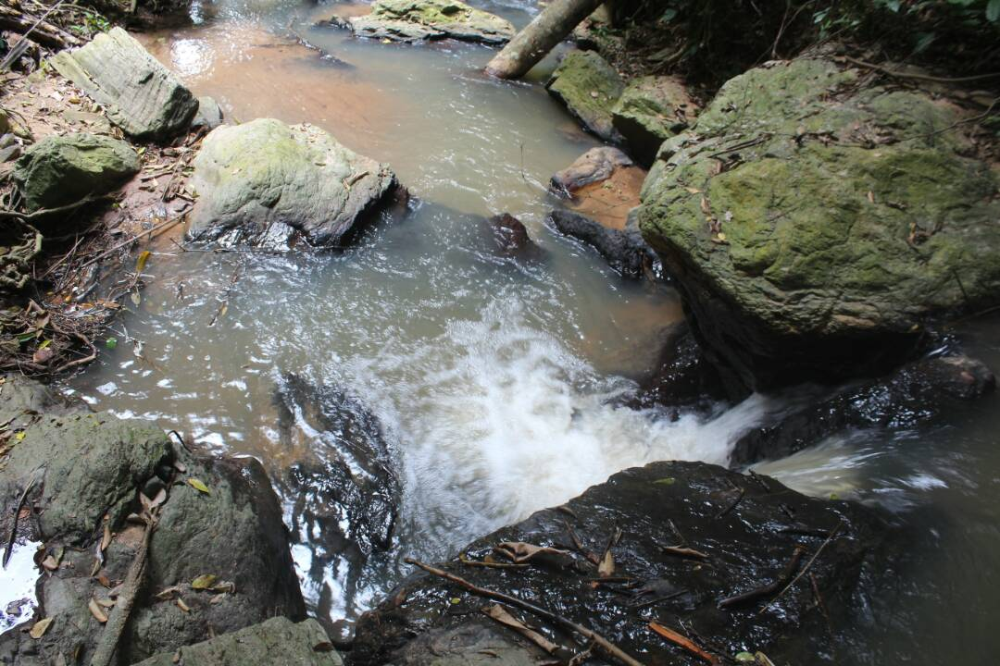
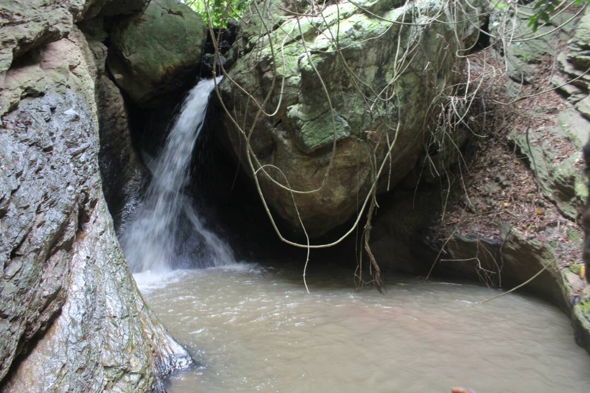
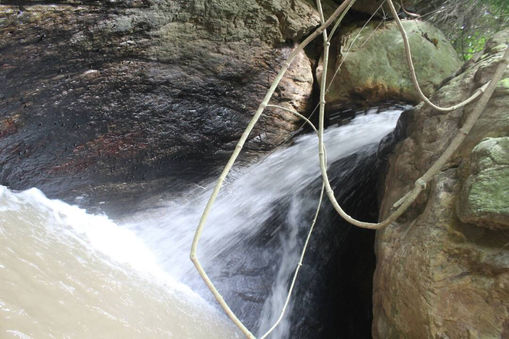

Adamrobe waterfalls — A beauty of nature
On a planned hike that led to a tour, my colleagues and I discovered a gift of nature in a town about 30 minutes walk from Oyibi/Frafraha police station.
Adamrobe, with its rich history and hospitable folks, holds in its abode an irresistible waterfalls streaming down rocks and sheltered by green vegetation.
The walk to the waterfall; about 10 minutes from the town had us climbing some rocks and feeling as though we were back in ancient days; with us having to remove our footwear and walking barefooted through the water streaming on slippery rocks.
Our guide, Jessica, upon her description and tales of how until recently folks of the town used to fetch from the pool of the waterfalls and enjoy themselves bathing during the weekend in the waterfalls, had me thinking of a village river.

“We used to carry basins filled with water from the fall only to get home after continuous climbing and descending with an almost empty basin. We had no knowledge of what gallons were by then so using the basins; we had to go back and forth a few times. Although, this helped us manage our water better”, said Jessica.
Upon reaching the end of our eventful climb, before us was a site worth experiencing; a beauty of nature. As we got into the pool and drew closer to a cave almost hidden by the fall, we saw a gorgeous rock, which from afar looked like a big black tied polythene bag.
We also discovered that the country has another beautiful umbrella rock waiting to be unveiled. Notwithstanding the rough route to the scenery, its troubles are worth it.
The untold story of Adamrobe
History tells us that every country, town or village was once a bare land inhabited by no one, with time people moved to settlements for varied reasons, be it food, security amongst other things. Adamrobe is no short of that history too. Adamrobe is a relatively small town in the Eastern Region of Ghana. It is situated at the foot of a mountain in between Oyibi and Dodowa. Adamrobe, which means, “He relies on pineapples”.
According to Esther Botwe a retired teacher, before humans settled there, Adamrobe was populated with pineapples from nature. Folklore has it that, the name Adamrobe originated when a hunter from Aburi came to present day Adamrobe to hunt for animals. He stayed in the bush for more than a week to hunt. On getting back home, he was asked how he survived with no food or water in the bush for that long and he revealed that he relied on pineapples for food.
Anytime the hunter went hunting and was asked of, the folks always said “Odan Abrobe” which literally means, “he relies on pineapples”. The phrase “Odan Abrobe” metamorphosed to present day “Adamrobe”. According to Jessica; He discovered that the land was fertile and so decided to explore that part hence his family joined him to start farming on that rich land. Gradually other people moved down from Aburi to present day Adamrobe and started farming; this became the occupation of the Adamrobe people.

Seeing how blithe the Adamrobe people are, one would think they have the world at their feet. A tour in Adamrobe revealed that, farming being the main occupation of the men have been abandoned in pursuit of Taxi driving leaving the lands fallow. Only a handful of inhabitants engage in farming, as a result of this, the women have to travel to Madina or Dodowa to buy foodstuffs to sell in Adamrobre. According to Esther Botwe, it is something that could have been avoided only if more people engaged in farming. Most kids in Adamrobe are taken care of by white people. According to Angel Botwe, The white people adopt kids at that have no one to care for them as early as 5 years and put them through school till they turn 25. This is because they assume that at 25 you should have acquired the necessary vocational skills to stand on your own. Angel being one of the beneficiaries of their benevolence.
A new dawn for Adamrobe
In recent times, the Minister for Tourism, Art and Culture, Hon. Catherine Afeku on her days visit to the Western Region, explained to Ghanaians the intentions of government to revive the tourism sector and to make it more attractive and profitable to the economy and the people at large. This to me sounds very interesting and welcoming because she, then Minister Designate as mentioned and appointed by the President Nana Akufo Addo in his third batch of Ministerial appointment said, she describes tourism as an “invisible export’ which has a lot potential for job creation in the tourism industry”. Well, since Madam Afeku believes in creating jobs through tourism, my visit to Adamrobe which is about five to ten minutes’ drive from Oyibi, is one village that needs her help. A discussion with the indigenous people revealed that, poverty is one of the diseases in the area because the development rate is low but high cost of living, with bad roads, educational defects, insufficient water supply among others.

“Adamrobe Isi” the amazing waterfall, the umbrella rock, the serene environment through to the fall, the cluster of trees among others is too special a place to be left out when it comes to tourist attraction sites in Ghana. The fact that it is very close to Accra, way before Tsenku falls in Dodowa near Shai Hills Wildlife reserve, is another great factor to consider especially favouring those who have issues with making long journeys.
I believe tourist attraction sites do not just serve the government but also have great impact on the people who reside there, to mean that, tourism and tourist sites play these roles in the nation as a whole: income creation both to the nation and its nationals, welcomes job opportunities, develops a community and its surroundings, expands sales of products and services, builds relationships, increases foreign exchange without exporting anything as a country, enriches the educational standards of the people and helps educate tourists on a particular site, enlightens tourists on our rich history, an opportunity to enjoy the travelling experience, it can also influence tourist religious believes and more.
It is better seen, experienced and appreciated than heard, Ghana stands a chance of boasting again with another waterfall and an umbrella rock, while Adamrobe hopes to see a new dawn as their roads are properly constructed, tourists visiting their town, jobs available to all and above all, a new, well developed and transformed Adamrobe. Read More
Aikon Magazine Copyright 2017